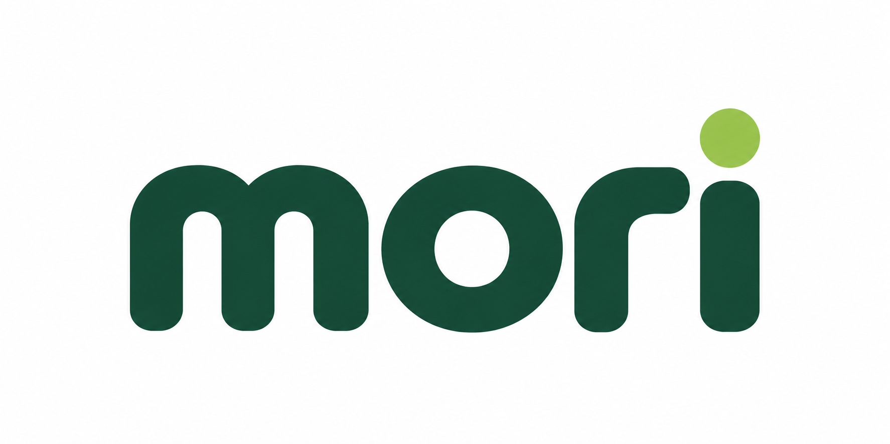

01
Latin wordmark
mori
User rejected design quality
Plant subscription
Palette intent Forest green + lime
See the brief 요청 보기
Create a wordmark using the exact lowercase text mori for a plant subscription. Use forest green and lime; make the letters the design, with no separate icon.
식물 구독 서비스 mori의 워드마크를 만들어 주세요. 정확한 글자는 mori이며, 포레스트 그린과 라임을 사용하고 별도 아이콘 없이 글자 자체를 디자인해 주세요.
Observed result. The exact lowercase mori is readable, with broad rounded green letters, an open o counter and a lime dot.
Limit. The soft rounded style is relatively generic. The image supplies no editable font or verified typeface provenance.